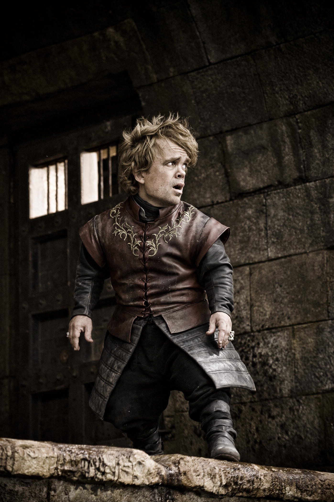
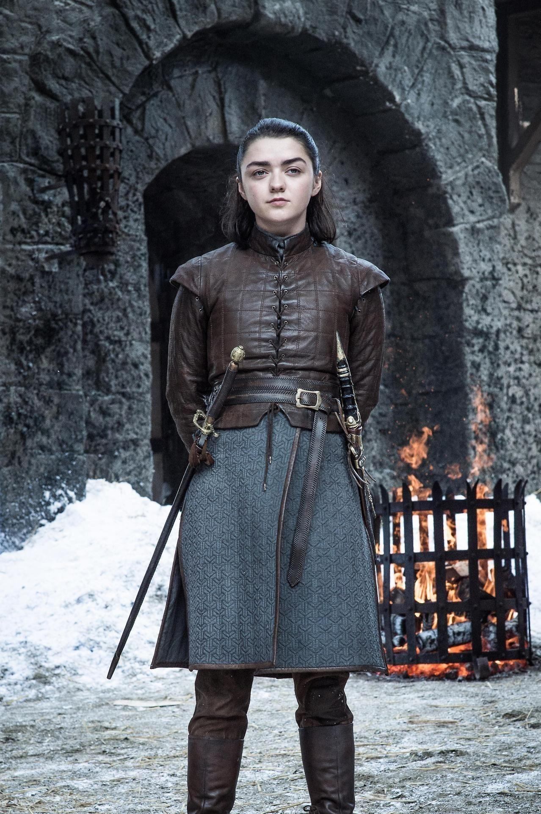

Jon Snow
A brave and honorable leader who struggles with his identity and duty.

Daenerys Targaryen
A powerful and determined character who fights to reclaim her family's throne

Tyrion Lannister
Known for his intelligence, wit, and survival instincts.
Arya Stark
A fearless and independent character with an incredible transformation.
Sansa Stark
A character who grows from innocence into political strength.